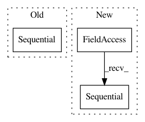

c67aabab14b14fdef4b7e0ac576e2178dfb272b3,nlp_architect/models/np_semantic_segmentation.py,NpSemanticSegClassifier,build,#NpSemanticSegClassifier#Any#,94
Before Change
first_layer_dens = 64
second_layer_dens = 64
output_layer_dens = 1
model = Sequential()
model.add(Dense(first_layer_dens, activation="relu", input_dim=input_dim))
model.add(Dropout(0.5))
model.add(Dense(second_layer_dens, activation="relu"))
model.add(Dropout(0.5))
After Change
first_layer_dens = 64
second_layer_dens = 64
output_layer_dens = 1
model = tf.keras.models.Sequential()
model.add(tf.keras.layers.Dense(first_layer_dens, activation="relu", input_dim=input_dim))
model.add(tf.keras.layers.Dropout(0.5))
model.add(tf.keras.layers.Dense(second_layer_dens, activation="relu"))
model.add(tf.keras.layers.Dropout(0.5))
In pattern: SUPERPATTERN
Frequency: 4
Non-data size: 3
Instances
Project Name: NervanaSystems/nlp-architect
Commit Name: c67aabab14b14fdef4b7e0ac576e2178dfb272b3
Time: 2019-03-06
Author: peteriz@users.noreply.github.com
File Name: nlp_architect/models/np_semantic_segmentation.py
Class Name: NpSemanticSegClassifier
Method Name: build
Project Name: NervanaSystems/nlp-architect
Commit Name: c67aabab14b14fdef4b7e0ac576e2178dfb272b3
Time: 2019-03-06
Author: peteriz@users.noreply.github.com
File Name: nlp_architect/models/supervised_sentiment.py
Class Name:
Method Name: one_hot_cnn
Project Name: NervanaSystems/nlp-architect
Commit Name: c67aabab14b14fdef4b7e0ac576e2178dfb272b3
Time: 2019-03-06
Author: peteriz@users.noreply.github.com
File Name: nlp_architect/models/supervised_sentiment.py
Class Name:
Method Name: simple_lstm
Project Name: NervanaSystems/nlp-architect
Commit Name: c67aabab14b14fdef4b7e0ac576e2178dfb272b3
Time: 2019-03-06
Author: peteriz@users.noreply.github.com
File Name: nlp_architect/models/most_common_word_sense.py
Class Name: MostCommonWordSense
Method Name: build